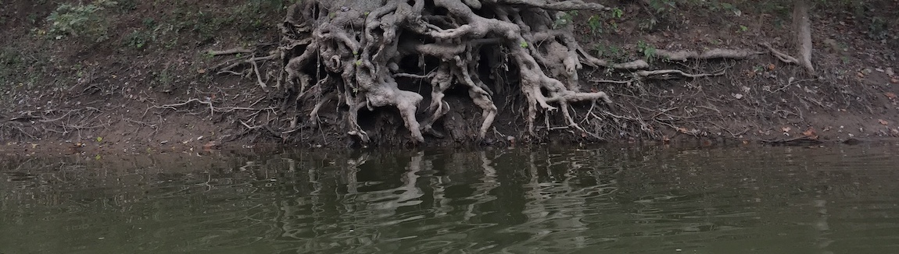

Early Papers on Reservoir Computing

I named them "context-reverberation" networks, but the concept was subsequently described under the names "echo state networks" (Jaeger in 2001) and "liquid state machines" (Maass et al in 2002), with the general approach nicely named "reservoir computing" (Verstraeten et al in 2005):
- Neurodynamics of context-reverberation learning (1990)
- Context dynamics in neural sequential learning (1991)
The idea was simple: have spatiotemporal input patterns flow into a fixed high-dimensional dynamical system (so the states reflect encoded input history, i.e., context), and let a perceptron learn to interpret those states.
For the dynamical system, I picked two: recurrent neural networks and reaction-diffusion systems ("Turing's Other Machine").
I had intially called them "history reverberation networks" and "input history repositories" when I presented on them sat the Aerospace Applications of Artificial Intelligence Conference in Dayton Ohio, and at the Great Lakes Computer Science Conference (at Western Michigan University), both in October 1989. For her Master's thesis, my student Nancy Day at Wright State University applied context-reverberation networks to try to learn regular languages.
Although I moved on to other things, I was fascinated by the interpretation of states (whatever a state is), philosophically. So, much later, I presented on it at the North American Computing and Philosophy (NACAP, now IACAP) Conference:
If that seems too philosophical, here's an inspiring review of some (to me) unexpected applications as of 2023:
- I.S. Maksymov, "Analogue and Physical Reservoir Computing Using Water Waves: Applications in Power Engineering and Beyond"
Photo (K. Kirby): Little Miami River, Cincinnati, 2018.